|
|
Recommended Journals
Nature EnergyThe provision of energy is a key issue at the heart of modern society: where do we get it from, how do we use it, and is there enough of it for what we want? Our growing thirst for energy must either be matched by supply or else adapted to meet it. Tackling these challenges is an essential part of many fields of research – both in the natural and social and behavioural sciences and economics – and is the focus of multi-billion-dollar global industries. |
Proceedings of the IEEEProceedings of the IEEE is the leading journal to provide in-depth review, survey, and tutorial coverage of the technical developments in electronics, electrical and computer engineering, and computer science. Consistently ranked as one of the top journals by Impact Factor, Article Influence Score and more, the journal serves as a trusted resource for engineers around the world. |
| 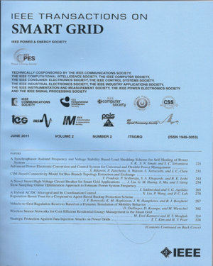 | IEEE Transactions on Smart GridThe IEEE Transactions on Smart Grid is a cross disciplinary journal aimed at disseminating results of research on and development of the smart grid, which encompasses energy networks where prosumers, electric transportation, distributed energy resources, and communications are integral and interactive components, as in the case of microgrids and active distribution networks interfaced with transmission systems. The journal publishes original research on theories and principles of smart grid technologies and systems, used in demand response, Advance Metering Infrastructure, cyber-physical systems, multi-energy systems, transactive energy, data analytics, and EV integration. Surveys of existing work on the smart grid may also be considered for publication when they propose a new viewpoint on history and a challenging perspective on the future of intelligent and active grids. |
| 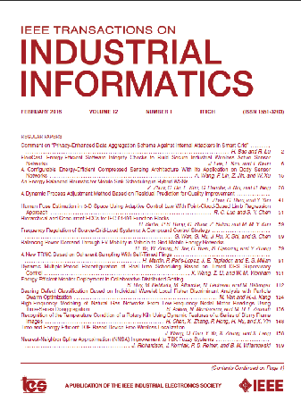 | IEEE Transactions on Industrial InformaticsIEEE Transactions on Industrial Informatics focuses on knowledge-based factory automation as a means to enhance industrial fabrication and manufacturing processes. This embraces a collection of techniques that use information analysis, manipulation, and distribution to achieve higher efficiency, effectiveness, reliability, and/or security within the industrial environment. The scope of the Transaction includes reporting, defining, providing a forum for discourse, and informing its readers about the latest developments in intelligent and computer control systems, robotics, factory communications and automation, flexible manufacturing, vision systems, and data acquisition and signal processing. |
| 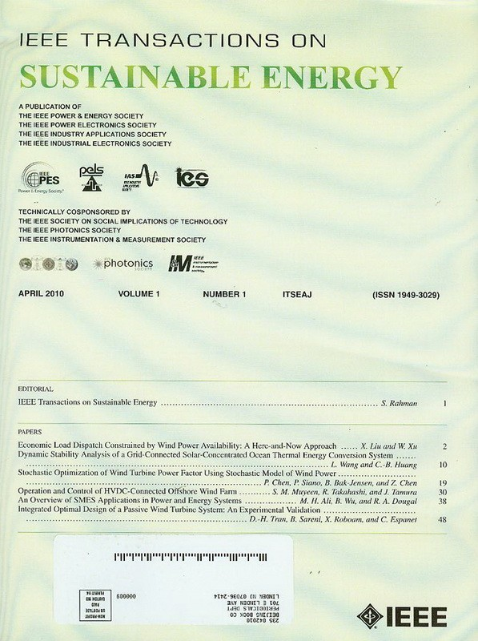 | IEEE Transactions on Sustainable EnergyThe IEEE Transactions on Sustainable Energy is a journal aimed at disseminating results of research on sustainable energy systems that can be integrated into the power transmission and/or distribution grid. The journal publishes original research on design, implementation, grid-integration and control of sustainable energy technologies and systems. The Transactions also welcomes manuscripts on design, implementation and evaluation of power systems that are affected by sustainable energy systems and devices. |
| 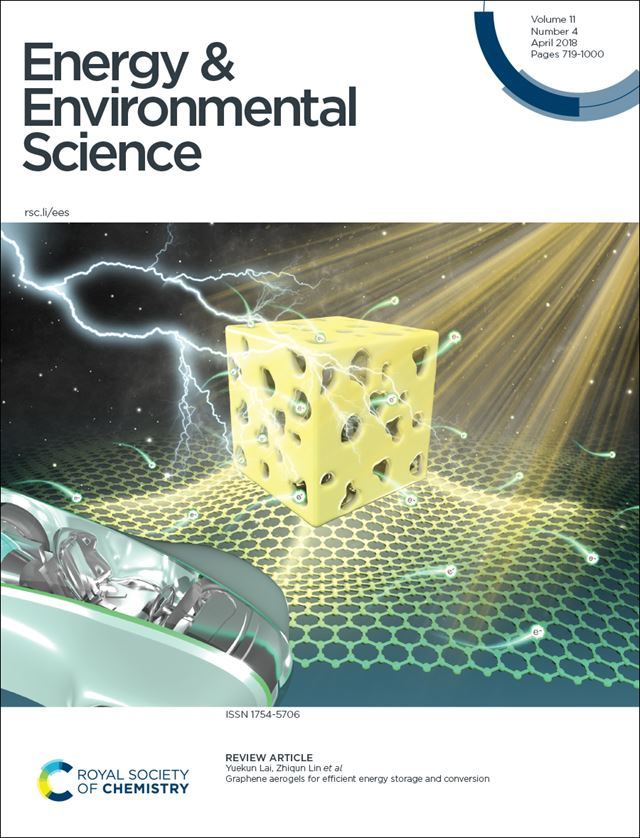 | Energy & Environmental ScienceEnergy & Environmental Science is an international journal dedicated to publishing exceptionally important and high quality, agenda-setting research tackling the key global and societal challenges of ensuring the provision of energy and protecting our environment for the future. The scope is intentionally broad and the journal recognises the complexity of issues and challenges relating to energy conversion and storage, alternative fuel technologies and environmental science. For work to be published it must be linked to the energy-environment nexus and be of significant general interest to our community-spanning readership. All scales of studies and analysis, from impactful fundamental advances, to interdisciplinary research across the (bio)chemical, (bio/geo)physical sciences and chemical engineering disciplines are welcomed. |
Renewable & Sustainable Energy ReviewsThe mission of Renewable and Sustainable Energy Reviews is to communicate the most interesting and relevant critical thinking in renewable and sustainable energy in order to bring together the research community, the private sector and policy and decision makers. The aim of the journal is to share problems, solutions, novel ideas and technologies to support the transition to a low carbon future and achieve our global emissions targets as established by the United Nations Framework Convention on Climate Change. |
CarbonThe journal Carbon is an international multidisciplinary forum for communicating scientific advances in the field of carbon materials, including low-dimensional carbon-based nanostructures. The journal reports new, relevant and significant findings related to the formation, structure, properties, behaviors, and technological applications of carbons, which are a broad class of ordered or disordered solid phases composed primarily of elemental carbon. |
| 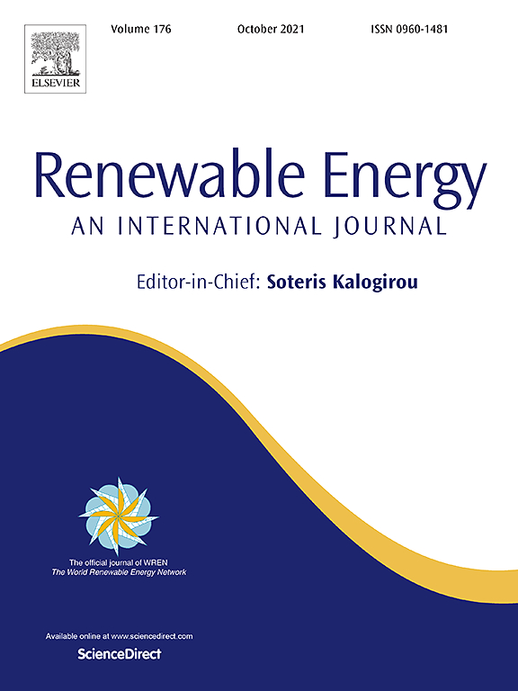 | Renewable EnergyRenewable Energy seeks to promote and disseminate knowledge on the various topics and technologies of renewable energy systems and components. The journal aims to serve researchers, engineers, economists, manufacturers, NGOs, associations and societies to help them keep abreast of new developments in their specialist fields and to apply alternative energy solutions to current practices. Renewable Energy is an international, multi-disciplinary journal in renewable energy engineering and research. The journal aims to be a leading peer-reviewed platform and an authoritative source of original research and reviews related to renewable energy. |
Journal of Environmental ManagementAs governments and the general public become more keenly aware of the critical issues arising from how humans use their environment, this journal provides a forum for the discussion of environmental problems around the world and for the presentation of management results. It is aimed not only at the environmental manager, but at anyone concerned with the sustainable use of environmental resources. |
| 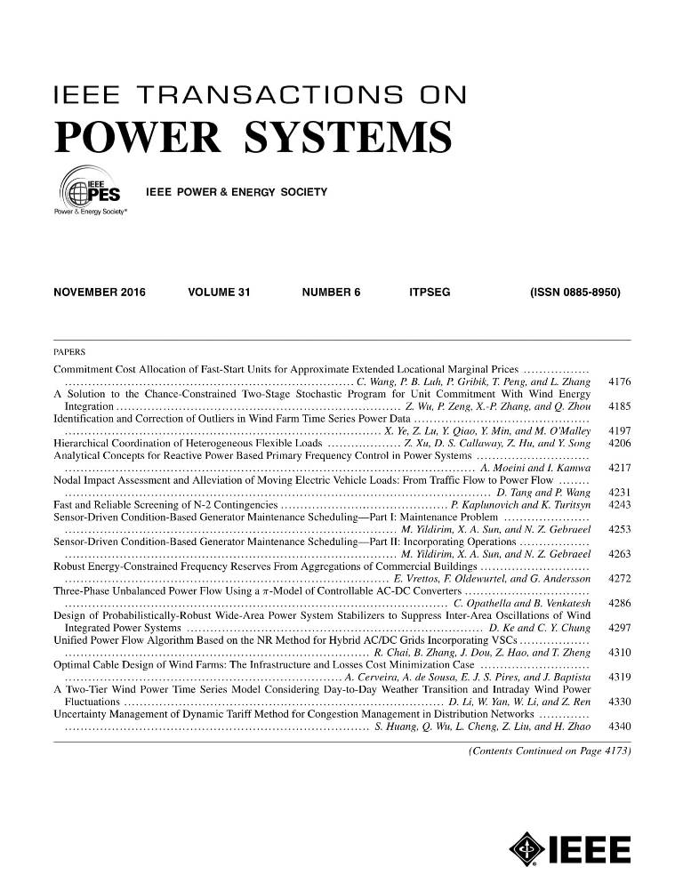 | IEEE Transactions on Power SystemsThe scope of IEEE Transactions on Power Systems covers the education, analysis, operation, planning, and economics of electric generation, transmission, and distribution systems for general industrial, commercial, public, and domestic consumption, including the interaction with multi-energy carriers. The focus of this transactions is the power system from a systems viewpoint instead of components of the system. It has five (5) key areas within its scope with several technical topics within each area. These areas are: (1) Power Engineering Education, (2) Power System Analysis, Computing, and Economics, (3) Power System Dynamic Performance, (4) Power System Operations, and (5) Power System Planning and Implementation. |
| 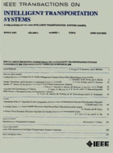 | IEEE Transactions on Intelligent Transportation SystemsThe theoretical, experimental and operational aspects of electrical and electronics engineering and information technologies as applied to Intelligent Transportation Systems (ITS). Intelligent Transportation Systems are defined as those systems utilizing synergistic technologies and systems engineering concepts to develop and improve transportation systems of all kinds. The scope of this interdisciplinary activity includes the promotion, consolidation and coordination of ITS technical activities among IEEE entities, and providing a focus for cooperative activities, both internally and externally. |
| 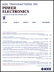 | IEEE Transactions on Power ElectronicsThe IEEE Transactions on Power Electronics journal covers all issues of widespread or generic interest to engineers who work in the field of power electronics. Examples of papers which would be more appropriately published in other Journals or Transactions include: 1) Papers describing semiconductor or electron device physics. These papers would be more appropriate for the IEEE Transactions on Electron Devices. 2) Papers describing applications in specific areas: e.g., industry, instrumentation, utility power systems, aerospace, industrial electronics, etc. These papers would be more appropriate for the Transactions of the Society which is concerned with these applications. 3) Papers describing magnetic materials and magnetic device physics. These papers would be more appropriate for the IEEE Transactions on Magnetics. 4) Papers on machine theory. |
Solar EnergySolar Energy, the official journal of the International Solar Energy Society, is devoted exclusively to the science and technology of solar energy applications. Solar Energy welcomes manuscripts presenting information not previously published in journals on any aspect of solar energy research, development, application, measurement or policy. The term “solar energy” in this context includes the indirect uses such as wind energy and biomass. Because of the international character of Solar Energy, articles that deal solely with the solar radiation or wind data base of a specific country are not normally considered suitable for Solar Energy. Submitted manuscripts may take the form of reports of original studies or reviews of significant prior work in a given area. All manuscripts are subject to reviews to assure accuracy, clarity, and long-term value. |
| 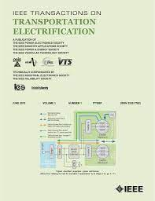 | Transactions on Transportation ElectrificationIEEE Transactions on Transportation Electrification is focused on components, sub-systems, systems, standards, and grid interface technologies related to power and energy conversion, propulsion, and actuation for all types of electrified vehicles including on-road, off-road, off-highway, and rail vehicles, airplanes, and ships. |
| 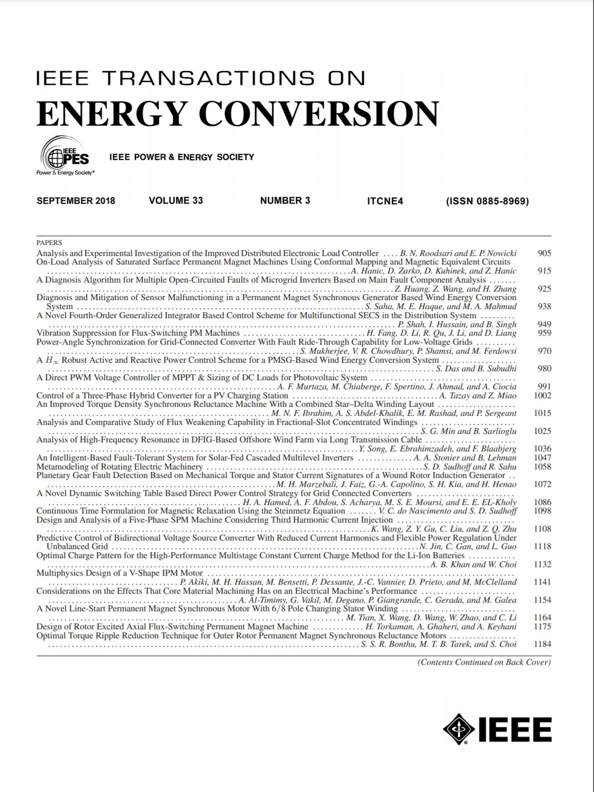 | IEEE Transactions on Energy ConversionThe IEEE Transactions on Energy Conversion publishes both research and application-oriented articles dealing with the development, design, operation, modeling, analysis, diagnostics and control of electrical equipment used to convert any kind of energy (such as mechanical, chemical and solar) into electrical energy and vice versa. Any electric power generating apparatus based on fossil, renewable, nuclear or unconventional sources and used for either centralized or distributed generation systems is of interest for the journal. The scope also includes any kind of equipment used to convert electric into mechanical power, such as electric drives, machinery and actuators. Electrical energy storage and electrical energy production from storage are covered. Power electronics and control should not be the primary research contribution of the papers. They are of interest only when they are part of the energy conversion process being described, such as power electronics converters treated as a part of electric drives, or grid interfaces for electric power generation or electric energy storage devices. |
| 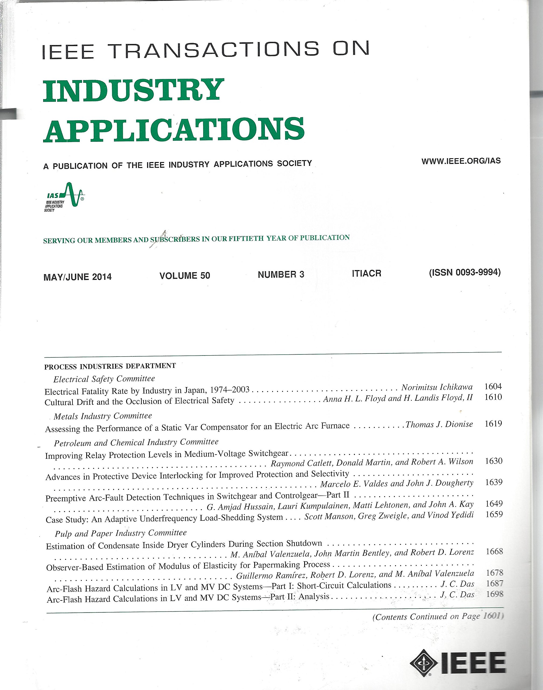 | IEEE Transactions on Industry ApplicationsThe scope of the IEEE Transactions on Industry Applications includes all scope items of the IEEE Industry Applications Society, that is, the advancement of the theory and practice of electrical and electronic engineering in the development, design, manufacture, and application of electrical systems, apparatus, devices, and controls to the processes and equipment of industry and commerce; the promotion of safe, reliable, and economic installations; industry leadership in energy conservation and environmental, health, and safety issues; the creation of voluntary engineering standards and recommended practices; and the professional development of its membership. |
 |
Carbon ManagementCarbon Management is a scholarly peer-reviewed forum for insights from the diverse array of disciplines that enhance our understanding of carbon dioxide and other GHG interactions – from biology, ecology, chemistry and engineering to law, policy, economics and sociology. The core aim of Carbon Management is it to examine the options and mechanisms for mitigating the causes and impacts of climate change, which includes mechanisms for reducing emissions and enhancing the removal of GHGs from the atmosphere, as well as metrics used to measure performance of options and mechanisms resulting from international treaties, domestic policies, local regulations, environmental markets, technologies, industrial efforts and consumer choices. |
| 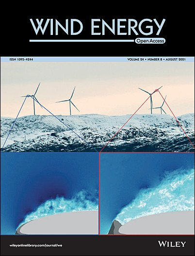 | Wind EnergyWind Energy offers a major forum for the reporting of advances in this rapidly developing technology with the goal of realising the world-wide potential to harness clean energy from land-based and offshore wind. The journal aims to reach all those with an interest in this field from academic research, industrial development through to applications, including individual wind turbines and components, wind farms and integration of wind power plants. Contributions across the spectrum of scientific and engineering disciplines concerned with the advancement of wind power capture, conversion, integration and utilisation technologies are essential features of the journal. |
Visits since 2021: